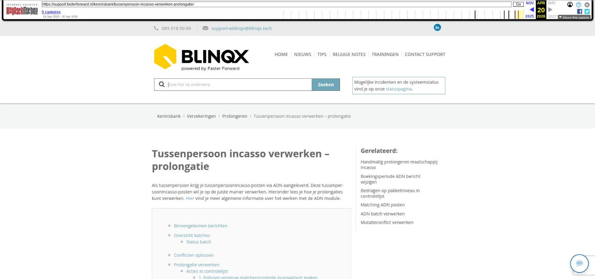

Categorie/productgroep van een product aanmaken

Tekstinhoud
Categorie/productgroep van een product aanmaken
Verschillende producten binnen eBlinqx worden onderverdeeld door categorieën. Bij het aanmaken van een rechterdeel in het product filter je door middel van deze categorieën. Dit veld heet daar 'Productgroep' of 'Soort verzekering'. Hierin wordt vastgelegd welk type product het is.
Categorie/productgroep aanmaken
Synchronisatie Hypotheekbond Portefeuillesignalen instellen
Categorie/productgroep koppelen aan product
Categorie/productgroep financieel inrichten
Meerdere administraties
Categorie/productgroep aanmaken
Standaard staan er al veel categorieën in eBlinqx. Nieuwe categorieën kan je aanmaken in de beheermodule. De nieuwe categorie kan je aanmaken via module Producten – Productcodesonderhoud.
Je klikt daar op het tabblad Code manager – Categorie.
Hier kan je door middel van het + icoon een categorie aanmaken. Tijdens het aanmaken kies je het artikeltype en geef je de categorie een naam naar keuze, een code is optioneel.
Synchronisatie Hypotheekbond Portefeuillesignalen instellen
Indien het artikeltype 'Levensverzekering' of 'Vermogen & bancair' betreft dan is het hier ook mogelijk om aan te geven of het product waarin deze categorie geselecteerd is (zie hieronder) gesynchroniseerd moet worden naar Hypotheekbond Portefeuillesignalen. Dit bij het veld 'Synchroniseren naar NHB als'. Indien je niet wilt dat producten met deze categorie gesynchroniseerd worden dan zet je dit veld op 'Nee'. In je wel wilt dat producten met deze categorie gesynchroniseerd worden dan kies je in het dropdownmenu als welk type deze gesynchroniseerd moet worden. Met betrekking tot de levensverzekering heb je verschillende opties. De optie 'Ja, als levensverzekering gemengd' is alles en overlijden. Hierbij hoort dan het volgende rijtje:
12 – Beleggingsverzekering 13 – Lijfrenteverzekering 15 – Overlijdens Risicoverzekering 15 – Uitvaartverzekering 17 – Levensverzekering 17 – Spaarverzekeringen 17 – Levensverzekering bij hypotheek 18 – Pensioenverzekering 385 – Levensloopregelingen
De optie 'Ja, als levensverzekering overlijden' betreft alleen overlijden.
Categorie/productgroep koppelen aan product
De aangemaakte categorie heb je gekoppeld aan een artikeltype. In Productbeheer staan de diverse producten die vallen onder de verschillende artikeltypen. In deze producten staat het veld Categorie. In dit veld kan je de categorieën kiezen die aan het betreffende artikeltype zijn gekoppeld. In onderstaande printscreen is het artikeltype Dienst en de categorie die hieraan gekoppeld is, is 001 – Hypotheekadvies. Dit is ingesteld onder het product Advies en bemiddeling – Doorstromer.
Categorie/productgroep financieel inrichten
Het is mogelijk om het product ook voor facturatie in te richten. In het tabblad Inkoop/Verkoop dien je dan de categorie/productgroep te selecteren. Het is dan van belang dat aan de categorie de juiste grootboekrekeningen gekoppeld zijn. Hiervoor ga je naar Financieel – Stamgegevens – Productgroepbeheer. Hier zoek je de aangemaakte categorie op en je klikt op het wijzigingsicoon. Je selecteert vervolgens de grootboekrekening voor de omzet, kosten en voorraad en je slaat op.
Let op: ook vanuit het tabblad Inkoop/Verkoop en de module Productgroepbeheer is het mogelijk om een nieuwe categorie/productgroep aan te maken. Bij het aanmaken krijg je dan bovenstaand scherm te zien. In dit scherm is het dus niet mogelijk om aan te geven of producten met deze productgroep/categorie gesynchroniseerd moeten worden naar Portefeuillesignalen. Dit moet je dan alsnog instellen via Productcodesonderhoud.
Meerdere administraties
Als er meerdere administraties zijn dan dien je per administratie de grootboekrekeningen in te stellen. De categorie/productgroep en eventueel het product maak je aan op de hoofdadministratie. Vervolgens ga je per administratie deze categorie/productgroep opzoeken in Productgroepbeheer om vanuit daar de grootboekrekeningen te koppelen. Het wisselen van administraties doe je door op de naam van de administratie te klikken:
Laatste update: 15 oktober 2025
Was deze informatie nuttig?
Ja Nee
[Opmerking archivering: dit artikel staat onder drie kennisbankcategorieën: Dossier > Producten dossier, Hypotheken > Producten hypotheken, en Verzekeringen > Producten verzekeringen. In de subcategorielijst heet dit artikel "Categorie van een product aanmaken".]